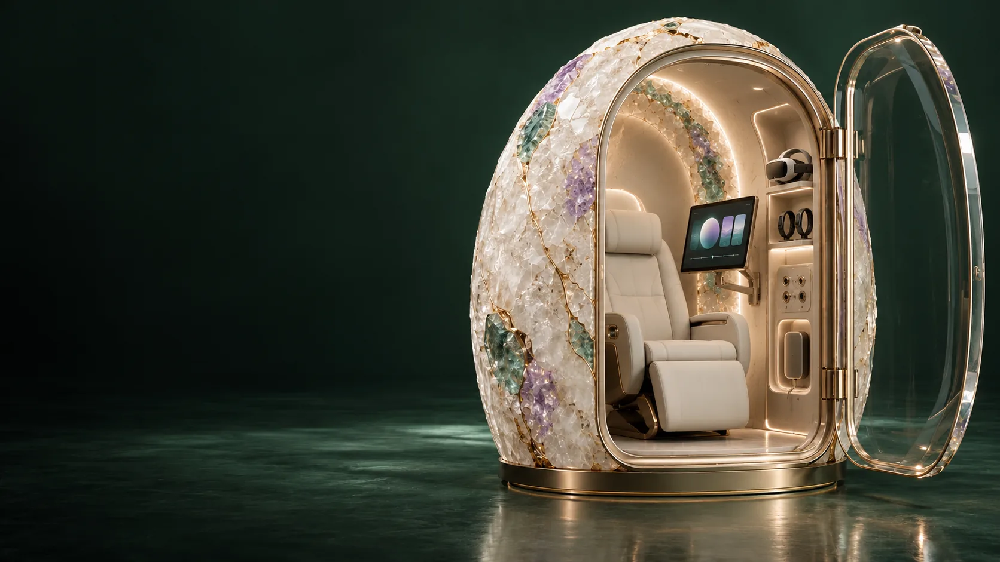
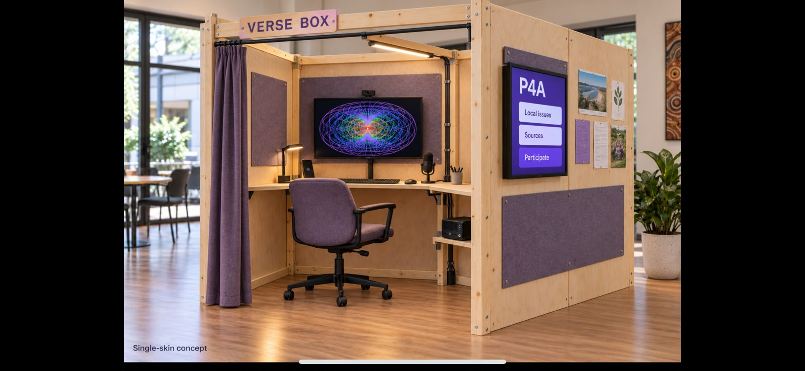
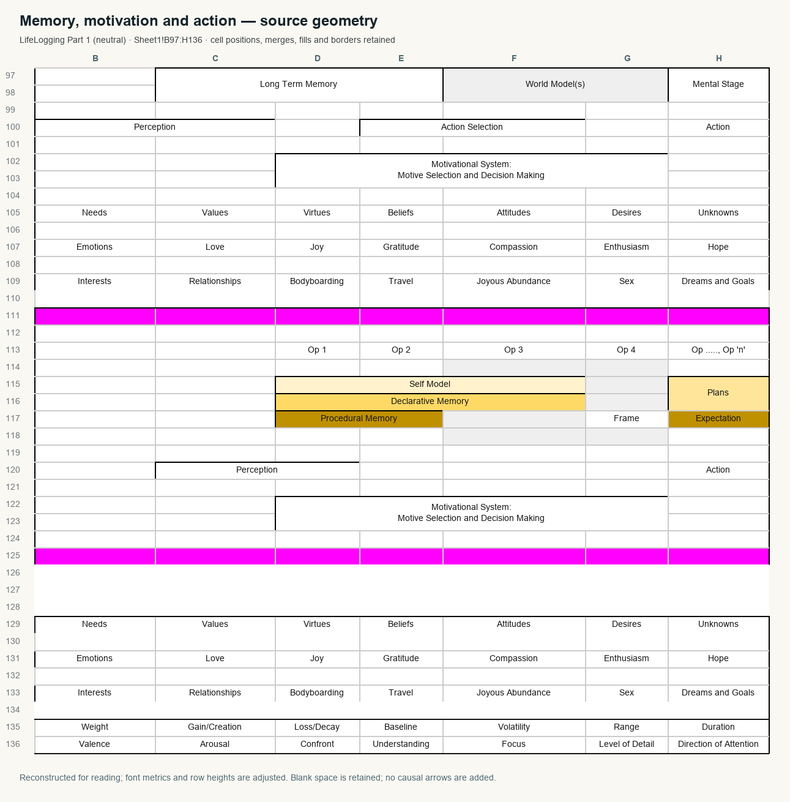

Patterns → facets → stacks → production → correction
Compose your Aura.
Put it to work.
Organise patterns across seven nested horn tori and their programmable facets. Select and stack what matters, choose AI and compute for a purpose, make something useful, then use corrections to regroup the next cycle.
A living pattern architecture
Gather meaning.
Compose capability.
The Aura organises patterns so they can be selected, combined and put to work. A facet can address linked memories, concepts, instructions, evidence and relationships. Ordered stacks provide context for a chosen task; corrections change what the next stack contains.
The Minimum Viable Self, questionnaires, three observers, lived experience and teaching practice feed this architecture. They are ways to discover and revise patterns, alongside the documents, websites, services and experiments those patterns help produce.
Read the architecture and production cycle ↗Seven nested horn tori · programmable facets
An address for a pattern.
A stack for a purpose.
This schematic shows the nesting and address structure. It is not a literal drawing of horn-torus geometry or a working 3D editor.
Pattern records
↕
Programmable facets
Composition
Select → stack → compute
Choose the patterns and their order, the purpose, an AI or agent configuration, compute and permitted tools. Review the resulting document, website or other artefact against that purpose.
Axis 1 / Self context
More than one self
Keep different self accounts and contexts addressable, with their own evidence, interpretations and corrections. Combining patterns does not require flattening them into a single permanent profile.
Axis 2 / Access domain
Internal and external views
Self context and access domain are separate choices. A spatial address alone does not grant access.
This site provides the workbook, source maps, guides and exports. The encrypted internal store, enforced access domains, facet-stack execution and full AI production environment described here still need implementation. Browser answers and exports are not encrypted by this studio.
From pattern to useful work · then around again
Make. Inspect. Correct. Recompose.
An ordered production cycle connects personal meaning to real artefacts. Each correction can change the grouping, stack, instructions or access choice used next time.
- 01
Gather patterns
Bring in source material, MVS responses, observer records, teaching practice and experience.
- 02
Organise facets
Link patterns to addresses and self contexts. Preserve provenance, uncertainty and alternative groupings.
- 03
Compose a stack
Select and order context, instructions and references for a concrete purpose and audience.
- 04
Choose the run
Specify AI, compute, tools, budget and permissions. Keep the planned access boundary explicit.
- 05
Produce and inspect
Create a document, website, learning resource or other artefact; examine what it does and misses.
- 06 ↺
Correct and regroup
Record feedback and outcomes. Revise the pattern organisation and compose the next cycle.
From seed pilot to a sustained inquiry
Weave towards 100,000 questions.
Whole-of-life reflection and teacher development each need sustained depth. Explore the territory map, inspect the coverage gaps and prepare bounded writing work from the sources.
Open the question weaving atlas ↗Inputs and practice · within the wider Aura
Develop the patterns that guide the work.
Use these workspaces to gather context, compare accounts and test ideas in practice. Bring what you learn back into the pattern organisation and the next production cycle.
Minimum Viable Self
Follow a domain, find a question, or use the core prompts. Add the evidence, context and contradictions that make an answer meaningful.
02 / CompareThe three-observer system
Keep the environment, the character’s attention and the narrator’s account distinct. Separate observed actions from interpretations, and let the participant correct the account.
03 / DevelopGenesis, in full immersion
Explore the 120-hour source pathway and an ambitious waking-day learning plan with rest, food, movement and application built into it.
Hyper-busy · deliberately expansive
Stretch the horizon.
Keep the meaning.
A 16-hour waking-day design, including food, movement, rest and life outside the Geode. Eight hours are reserved for sleep.
Hyper mode targets an effective content stream of 260–300 words per minute. Suitable audio at 2× playback can reach that delivered rate. Alternate intake, dialogue, making, fieldwork and reflection. “Superhuman” names the aspiration to extend capability; it is not a promised outcome.
Explore the immersion planThree clocks stay separate
Distinct physical settings
The Geode and the Verse Box.
The Geode refers to the specified HBOT setup. The Verse Box is a separate setting. Their source references and conditions belong with the architecture; a rock or a generic immersive room cannot stand in for either.


Make the extraordinary usable
Ground the etheric in the real.
Build businesses, find interesting people and create networks around things worth making. Connect intuition and imagination with an artefact, an experiment, a useful service or a conversation that changes what you know.
Some activities can overlap: learning over a meal, listening during suitable exercise or travel, and reviewing parallel work from an AI team. Give each activity a clear purpose and one accountable human decision. Parallel preparation is not a claim of deployed autonomous agents.
Follow the overlapping learning and venture pathways ↗A real place. An open future.
Begin where you are.
Connect what matters.
Luke’s work begins in ordinary life on Minjerribah and reaches towards wider possibilities. Place, family, work, music, travel and long-horizon questions can belong in the same personal architecture.
The December demonstration is an explicitly simulated possibility, grounded in public source material. It is here to make the process concrete, not to predict his future or speak on his behalf.
Explore the labelled demo answers ↗A long conversation · a whole life · the craft of teaching
A hundred thousand questions.
A weave to build.
A 100,000-question target across whole-of-life reflection, teacher development, Genesis and shared foundations. The atlas makes the territories, missing coverage and next writing jobs visible.
The existing 288 domain questions and 12 reflection lenses form a 300-item seed pilot. Planned slots and combinations are not finished questions. Generated, checked and answered records are counted separately below.
Coverage and gaps
Know what still needs asking.
Choose a territory to inspect its purpose and source anchors, then download a bounded writing packet. The packet can guide a human or a lighter agent. Assign its template to an available 50-question batch in the handbook’s job plan before starting work. Downloading it does not run a job.
Guidelines for continuing the weave
Keep the questions distinct and connected.
Inspect the planning dimensions
01 / Minimum Viable Self
A self you can
keep revising.
An ultra-dense question library with deeper reflection lenses. Answer in your own order. Unknown, private and not-yet are useful answers.
Optional browser storage is not an encrypted vault. Only your choice to save enables it. Your answers never become part of this public site.
Deep Interview · a continuing exploration
Keep asking. Change the frame.
Build one contextual follow-up at a time from an authored seed, a scenario, a perspective and your chosen branch. The navigator runs locally. Your answers supply the depth.
These estimates measure spoken question input at 260–300 words per minute. They exclude your answers, reflection, conversation, experiments and action. Possible combinations are navigation routes, not additional authored or reviewed questions.
Record this turn to include it in workbook saving and exports. Sharing labels record intention; they do not enforce access control.
Question library
Choose a way in.
The deeper reflection lenses
Use a lens when it reveals something useful. They expand an answer rather than multiply a completion score.
02 / Observe · compare · correct
Three views.
More room for truth.
The environment, the character’s attention and the narrator’s interpretation each know something different. The participant’s correction keeps their meaning in the record.
Read the full process and worked examples ↗Environment
What exists in the available scene or record? State the limits of what can be observed.
Attention
Which cues were available, and which did the character actually notice or hear? Keep those accounts separate.
Narrator
What reactions or actions were observed? Label interpretations separately, with alternatives and uncertainty.
A readable event record
Compare an encounter.
Describe a real event you choose to record, or load a fictional teaching example. A saved interpretation never gives an agent permission to act.
Open your personal workbook to choose browser storage or export all saved events with your answers.
03 / Aura Geode Genesis
A hundred and twenty hours.
A much larger horizon.
The Genesis source design is sixty two-hour qualifying pressure sessions. Use this studio to explore its learning sequence and the companion full-immersion day.
It does not record qualifying pressure time, prescribe treatment, operate a chamber or certify a completed Genesis programme. Clinical and operating records remain separate.
16 hours awake · 8 hours asleep
Hyper-busy, with a living rhythm.
The waking-day design includes eating, movement, rest and ordinary life. Faster intake is useful only when recall, comprehension and transfer keep pace.
This is the effective delivered rate. For suitable source audio, 2× playback is a way to reach it. Use recall, explanation and transfer into a real task to check that the meaning is coming through.
Genesis pathway
Explore the programme.
Review a session, inspect what it produces, and return to the source. Review marks describe this workbook, not competence or treatment completion.
Review marks stay in memory unless you enable browser saving in the personal workbook. Export the workbook there before leaving to keep your marks.
04 / Independent adult teacher development
Understand it deeply.
Make it teachable.
Develop your own Aura practice, then help someone else understand, question and use it. Teaching evidence includes their meaning, their choices and what transfers into a new situation.
Open the full teacher handbookTen actual streaming minutes contain 2,600–3,000 words; 15 contain 3,900–4,500. Reserve separate time for recall, teaching, the learner’s attempt and correction. The rate describes input delivery, not the length of a complete learning encounter.
Follow a real question.
Begin with the learner’s interest. Link a worked example, practice and a new context.
Keep the viewpoints.
What the teacher intended, what was visible and what the learner understood can differ.
Teach again, differently.
Use feedback to change the explanation or access route. Keep the evidence of what helped.
This is an independent teacher-development pathway, separate from Genesis pressure sessions. Review marks are personal notes, not accreditation or permission to practise with children.
Course studio
Read. Practise. Explain. Refine.
Review marks stay in memory unless you enable browser saving in the personal workbook. Export the workbook there before leaving to keep your marks.
05 / Spatial meaning & cognitive architecture
Read the relationships.
Not just the rows.
A bounding box, a cluster of words, a blank space or a repeated pattern can carry meaning. These sources are maps to interpret, not tables to flatten.
Open the source interpretation guideGeometry gives you a place to return to.
Aura Matrix Studio uses seven nested horn tori, with a fixed lattice that survives changes of view. Datasets can have several associations. A person can edit the meanings they give those places.
The lattice is an interface to a wider architecture of memory, vectors, records, instructions and connections. The torus does not need to be visible in every form, dialogue or world.
Inside and outside are address spaces in the current Studio. They do not enforce privacy. Keep sharing permission separate from where a record appears.
Open Aura Matrix Studio ↗
A careful reading process
Preserve the original. Make the interpretation inspectable.
- Look at the whole sheet.
Retain sheet names, used regions, merged cells, borders, colours, images and the location of every item.
- Identify candidate regions.
Mark clusters, boxes, sequences, systems and isolated fragments. A spatial relationship is evidence to explore, not proof of its intended meaning.
- Propose more than one reading.
Record the possible role of each region and the evidence for it. Keep ambiguity visible.
- Ask and revise.
Use the author’s correction to accept, change or defer the interpretation. Preserve the source addresses alongside the new links.
Seven optional perspectives
Associations you can change.
These are philosophical organising lenses, not measured traits or diagnoses.
06 / Sources, status & provenance
Follow a claim
back to its source.
Original documents, public project context and this studio’s new synthesis have different roles. The catalogue keeps those roles visible.
Images have sources too
Photographs and possibilities.
The coastal photographs show real places. Generated artwork shows an imagined experience. Neither establishes an operating service, an endorsement or a completed outcome.
Read the licence and asset rights ↗07 / Using your studio
Your answers.
Your next move.
This public site supplies the framework. Your working answers stay in your browser, under the storage choice you make.
Start with a question that matters.
Choose a domain or search for a topic. Write an answer in your own words, then add context, evidence or a deeper lens if it helps. You can leave a field blank, say “unknown”, withhold an answer or return later.
A useful MVS is not a person reduced to a score. It is enough reviewed context for a chosen purpose, with known gaps and a way to correct it.
Keep your work deliberately.
The default workbook exists only in this page’s memory. Export it before closing or refreshing the page. If you select “Save this workbook in this browser”, your answers, recorded interview turns, observer events and review marks are stored on this device. The choice is remembered with them.
Browser storage is not encrypted by this studio and can be read by someone using this browser profile. Clearing site data can erase it. Exports are ordinary unencrypted files; choose where you keep them.
JSON exports can be imported back into the studio. Markdown exports are readable records for your own notes. Import replaces the current workbook only after you confirm. Public demonstration files are a different format and are not accepted as personal workbooks.
Read the demonstration as a hypothesis.
The fictional scenario date is 15 December 2026, when Luke would be 44. The examples infer likely themes from the available public record; they do not establish what he will think, do or experience. Each example carries a basis, uncertainty and a question for correction.
Examples are read-only and never inserted into your answers. A verified personal statement, an interpretation and an imagined possibility should remain distinguishable.
Choose each disclosure.
Sharing labels record your intention. They do not encrypt files or enforce permissions. Review an export before giving it to a person, model service or training pipeline. Keep other people’s private information out unless you have the right to include it.
This website has no accounts, analytics, background uploads or automatic agent actions. It does not train a model. A future training workflow needs its own reviewed dataset, permissions and evaluation.
Public source. Personal outputs.
Original project material is under the Strange But True Public Source Licence. Personal and non-commercial learning and adaptation are permitted under its terms; commercial and institutional uses need written permission. Your own outputs belong to you. Third-party photographs and fonts retain their own licences.
Read the exact licence